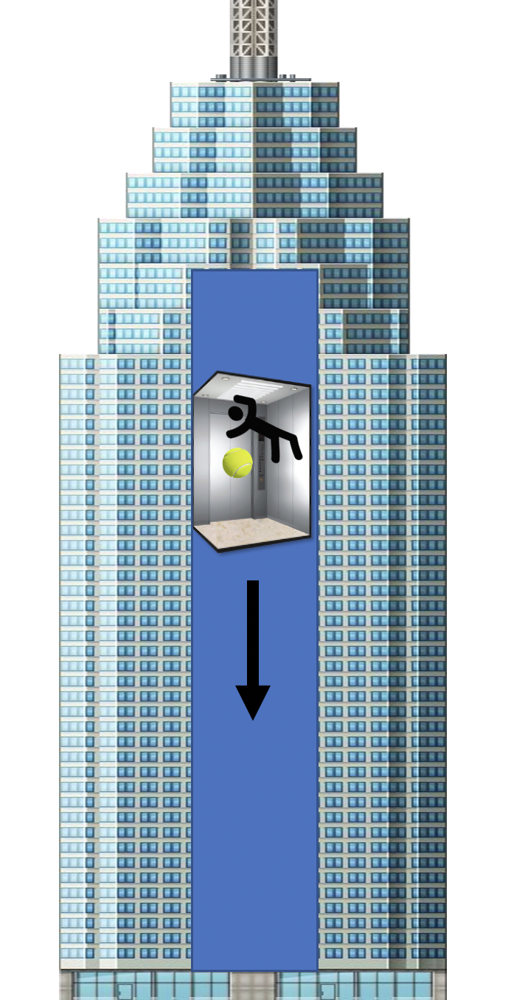

Forrige side🙂 🙁InertialsystemerPADLET

Hvis du følger oppskriften og nå tar en ball og slipper den i ro, hva skjer? Forblir den ikke i ro i forhold til deg? Både du og ballen blir vektløs inne i heisen (helt til den kræsjer da...). Du er da faktisk i et inertialsystem! Men nøyaktig hva gjør at ballen forblir i ro i forhold til deg når du slipper den?